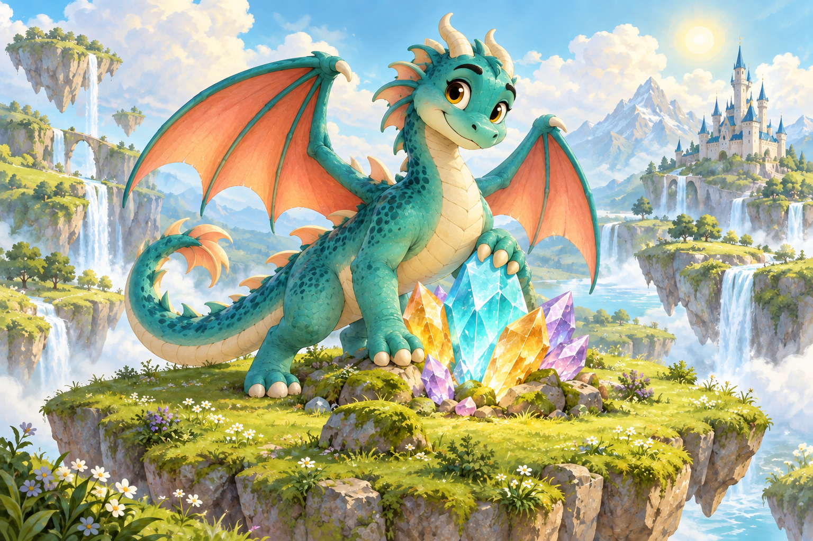

Ontdek Rekenavonturen: probeer Drakeneiland en Touwtrekken met 2 teams, plus, min of splitsen tot 10. Elke ronde duurt maximaal 90 seconden, met een doel van 10 goede antwoorden. In Pro kies je uit alle 7 spelwerelden, alle rekenoefeningen, 2–4 teams en onbeperkte speeltijd. Ik heb Pro · Bekijk Pro
Kies jullie spelwereld
HET GEHEIM VAN DE LICHTKRISTALLEN
Drakeneiland

01 · Reken en help
02 · Bonusmoment
Als de bonus aanstaat, telt elk goed antwoord elke 30 seconden gedurende 8 seconden dubbel.
03 · Vier het resultaat